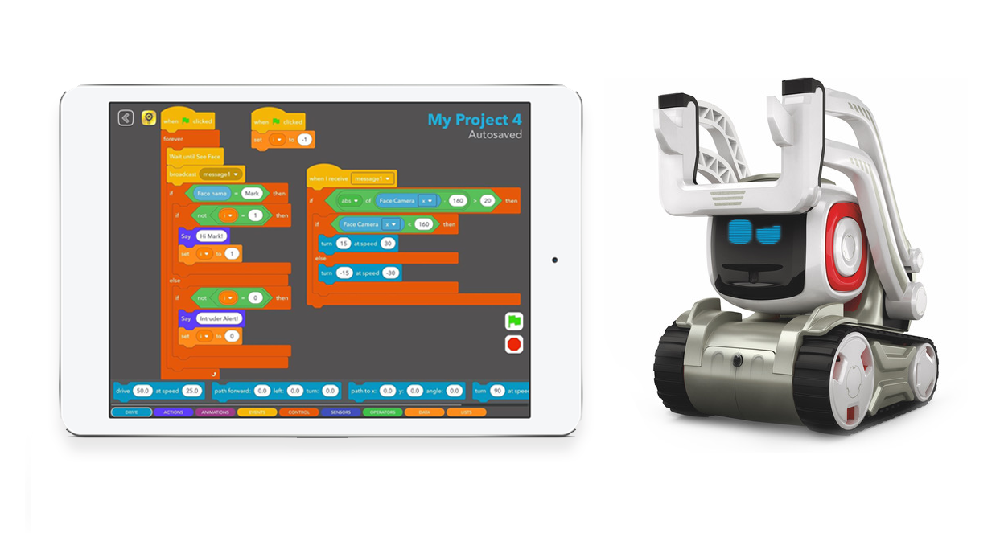
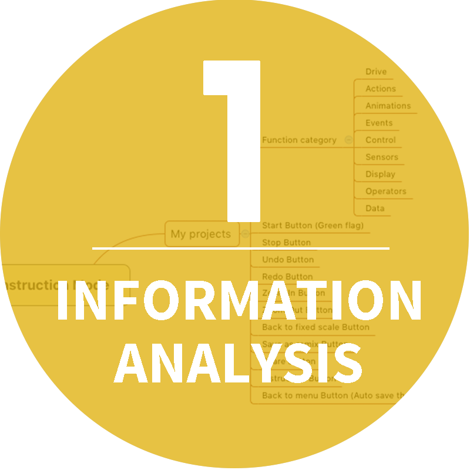
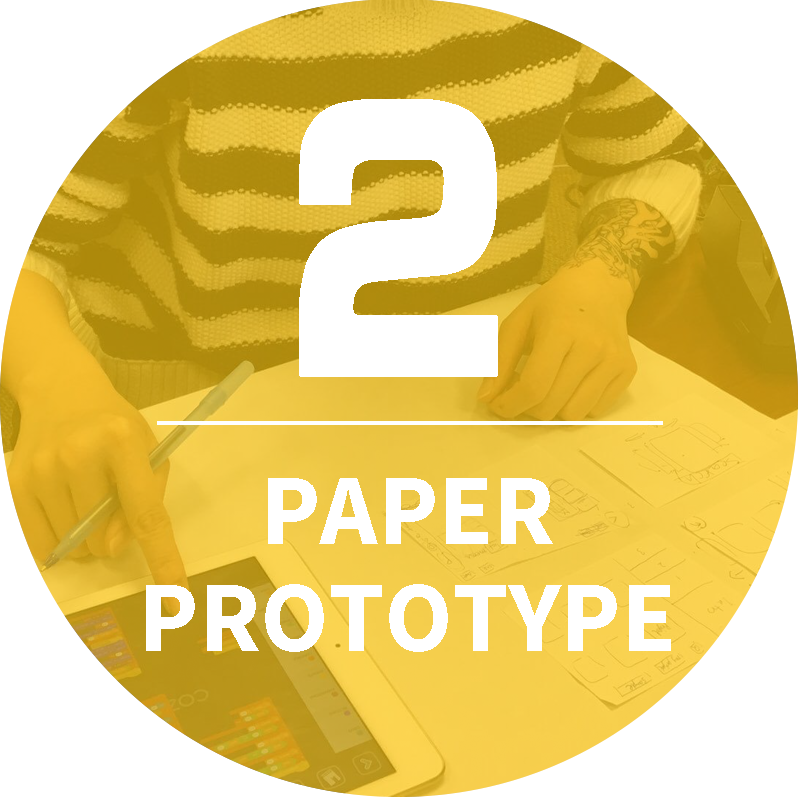
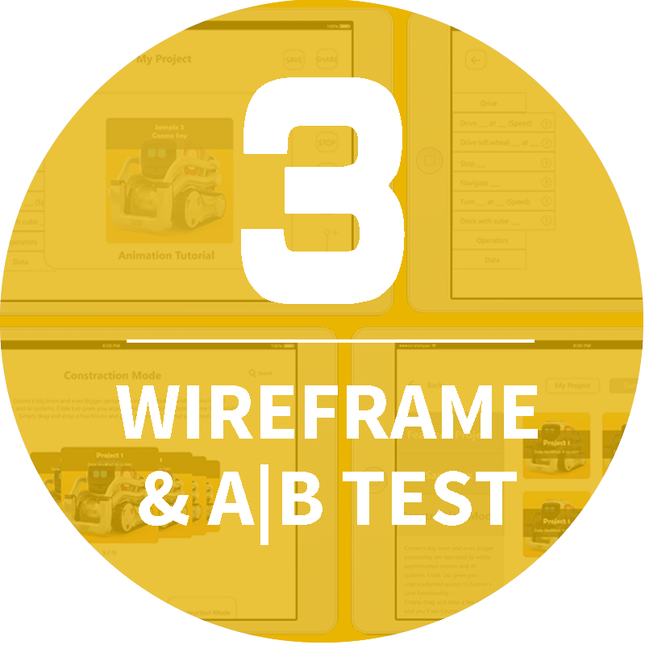
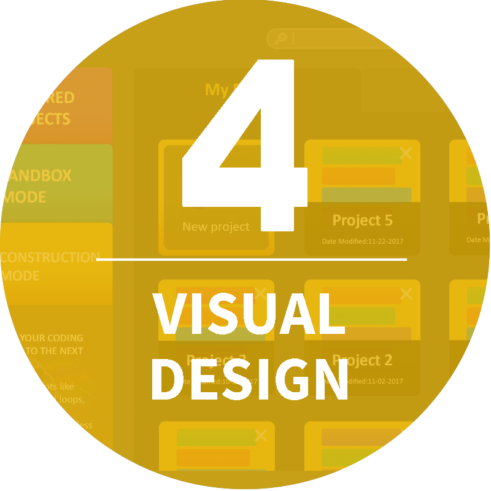
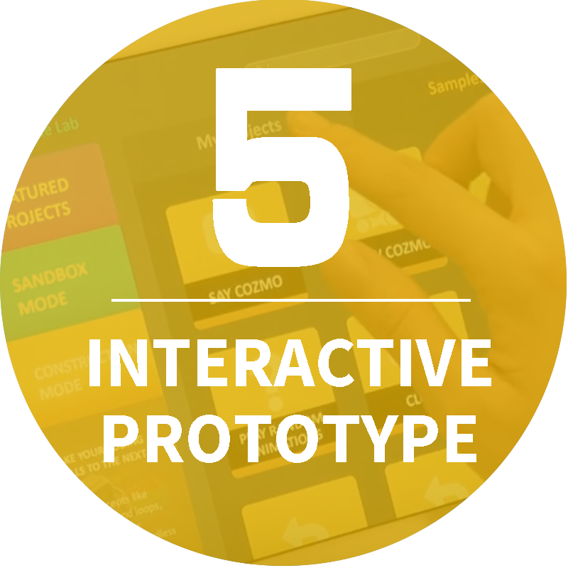

Project Type:
Team Project
(5 members)Project Roles:
UI/UX Designer
Project Duration:
15 weeks
Tools:
Photoshop, Adobe XD, Proto.io, Premiere
Promo Video
Project Cozmore was a project in partnership with Anki, a company that aims to build consumer robotics into everyday life. Our team aimed to create short experiences for the Cozmo robot using the new visual programming interface, Code Lab. Cozmo is a small real-life robot that can be programmed to interact with people and his cubes. We planned to make multiple games that are share-worthy and easy to remix for people from all age groups. What's more, we helped with improving the user experience of Code Lab by offering Quality Assurance test and UX research report. Project website: http://www.etc.cmu.edu/projects/cozmore/#banner
My role in this project was in charge of the UX research on Code Lab, creating a high fidelity interactive prototype for new UI design. I also conducted user tests for games we made for Cozmo.
UX research Goals

UX Research Report
Base on user test and QA (Quality Assurance) test,
deliver a detailed user experience report to analyze problems.
Interactive UI Prototype
Create an interactive prototype
to offer possible solutions for UX problems
What is Code Lab

Code Lab is a visual programming tool that provided by Cozmo App for creating actions for Cozmo, the small AI robot. Users can drag and drop the blocks in Code Lab, and assemble the blocks together to create actions for Cozmo, such as moving, turning, speaking or doing animations.
For offering this tool to users, Anki hopes to help those who are without a technical background, such as kids and teenagers can easily create contents for Cozmo as well as get to know programming during having fun.
Find out problems
1. QA Test
We sorted out problems causing inefficiency and inconvenience in QA tests.
2. User test
We observed users' behaviors and did user interviews to get insights.
3. Document
We documented the problems during tests for developing a full, detiled report.
For digging into Code Lab, we paid attention to our daily use of this App and documented all the problems we found when we were making games. We also invited users to try the product, using this visual programming tool to do simple tasks for Cozmo. We documented the problems they had during the tests and had insightful interviews with them to know their thoughts better. We vauled documentation a lot and built up sharing documentations between us and our client for posting problems and thoughts for Code Lab. All these efforts were beneficial for creating detailed UX research report later.
Design Process

Information architecture was used for sorting out the crucial structure of Code Lab while Competitive Analysis helped us to seek for best practice.
Besides of finding out problems from tests and interviews,
during information analysis we found out some pain points that Code Lab had, such as a straightforward and high-usability graphic interface is needed, some controls are ambiguous, Visual instruction and tutorial can be improved and etc.
We created paper prototypes for presenting the conceptual ideas to solve design problems efficiently.
Focused on the pain points we discovered during the tests and interviews, we brainstormed to create different paper prototypes and tried to figure out the ideal ways to solve problems.
For example, we found out the interactions for users to select personal coding projects was not efficient. We drew out multiple layouts and interaction flows with paper and pen, and presented ideas inside the team with our designers and programmers together. We collected feedback about pros and cons, and then finalized two designs for further steps.


Wireframes were for showing the different concrete designs to solve problems. We prototyped the wireframes into digital versions, and invited users to do AB tests.
We did interviews with the users and figured out what they preferred, what still needed to be improved and etc. We kept iterating our wireframe designs and did multiple rounds of tests. For making a better use of the feedback we received from the users, instead of changing everything the users asked, we sorted out the most popular questions and suggestions, and considered Anki's requirements together to make changes.
The goal for visual design was to build up a more visual-friendly using environment for all-age users, which are Anki's target users.
After we had a completed wireframe design for the new Code Lab interface, we moved on for visual design. We decided to change the color choices, icons and layouts.
We tried multiple graphic user interfaces designs, doing design reviews inside our team. We also did rapid prototypes for new interfaces to collect feedback from stakeholders.


For the last step, we transformed our design into a completed interactive prototype and created transition animations for the interfaces.
In our new design, we focused on our research content and tried new methods of design to solove the problems that the original design has. We delivered our report and presented our design to the client. By offering them these materials, we hoped to help Anki find out the user experience problems of Code Lab and the potential ways to solve them.
New UI Design